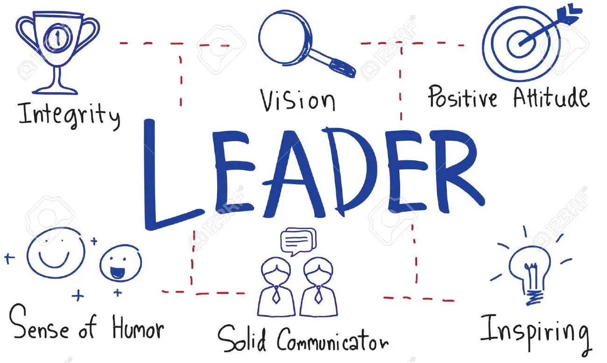

Self
"There is no other day. All days are present now. This moment contains all moments." - C.S. Lewis

Leadership
"As we look ahead to the next century, leaders will be those who empower others" - Bill Gates
Leadership Philosophy
My Philosophy
Great leaders use a variety of tools to maximize their impact as leaders. Developing a leadership philosophy can be a helpful practice for establishing a leadership framework. Leadership philosophies often vary depending on the leader's goals and overall approach to leadership. My leadership values are a result of my life experiences and have shaped the way I influence and lead others. As an immigrant, because I have encountered the unknown, I value belonging. I respect leadership from different perspectives and ways of knowing. Because I believe in strength in numbers, I value collaboration. I will lead with empathy, listen attentively, seek to understand, and leverage the experience and talents of others fully. Because I have known good individuals, I value compassion. I listen with respect and gratitude to others. My ultimate goal as a leader is to leave a legacy of community, belonging, and learning.
Leadership Experience
Zachry Leadership Program
2019 - 2022
Cohort E Member
The Texas A&M Zachry Leadership Program is a five semester-long experience sponsored by Zachry Group. In this organization, we explored business concepts, holistic development, and interpersonal awareness. What makes this program unique is that each semester we explored a topic including self awareness, empathy, creativity, purpose, and wisdom. This organization was indispensable to my college experience and changed what I expect from myself, how I interact with others, and how I view the world.
Student Engineers' Council
2020 - 2022
Society & Graduate Relations Co-Chair
The Texas A&M Student Engineers' Council is a student organization which aims to provide a representative voice for the student body, raise awareness through its service and events, and further the professional development of all engineering students across campus. In this organization, I had the opportunity to serve as a Society & Graduate Relations Co-Chair where I served in a 26-member Executive Council as a liason between the SEC and over 50 engineering societies. As someone who is passionate about diversity, equity, and inclusion (DEI), I spearheaded for our council to host our first DEI event called WIRED (When Inclusivity Really Enhances Diversity). From this experience, I learned what it means to have a platform and what it means to have your voice heard.
My Values & Aspirations
"When you want something, the whole universe conspires in order for you to achieve it” - The Alchemist, Paulo Coehlo
Values
Community
Often an important source of social connection and a sense of belonging. Participating in a community bonded by attitudes, values, and goals is an essential ingredient to enjoying a fulfilling life.
Growth
Constantly looking for opportunities to expand my horizons is important to me. Self-improvement helps enhance strengths, improve mental health, and even heal relationships.
Compassion
It pushes society to address inequality, cruelty, and the struggles of others. It encourages us to be kind. It allows us to see others and how we can help them or hold space for them.
Authenticity
When you're true to yourself, you not only trust the judgments and decisions that you make, but others trust you as well. They'll respect you for standing by your values and beliefs.
Aspirations

Building Community
Relationship Building
I will always strive to create a community of respect and trust. Whether it is with my co-workers, friends, or family, I hope to leave a positive impact on every group I interact with.
My Gallery
A sneak peek into my life
- All
- Jazz
- Friends
- Photography
Jazz 1
Jazz
Photography 1
Photography
Photography 2
Photography

Jazz 2
Jazz

Friends 1
Friends

Jazz 3
Jazz
Friends 2
Friends
Friends 3
Friends
Photography 3
Photography
Contact Me
It would be a pleasure to connect with you!
Social Profiles
Email Me
andresblanco.io@gmail.com
Call Me
(832) 660 8665